次元を組む
2025
次元の平面と3次元の立体を組み、視覚が次元を跨ぐような構成表現を試みた。
立体と、その立体に由来する平面とが、それぞれの点や線を共有することで、両者の関係はどちらの次元にも属さず、またその中間でもない、独特の空間性を生み出す。
鑑賞者は、それぞれの作品に潜む微妙に異なる秩序を、次元を往復しながら延々と読み解き続けてしまう。
このような、ある種のわからなさ・不可思議さが放つ力について探った。
award : NYAA2026 入賞
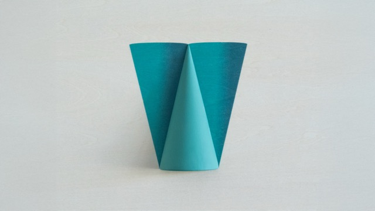
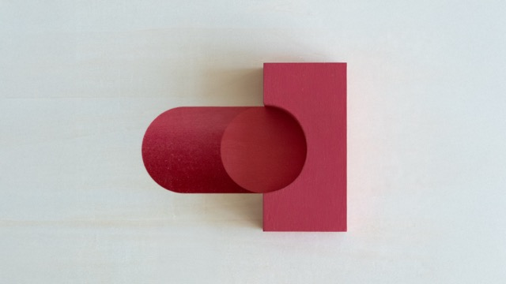
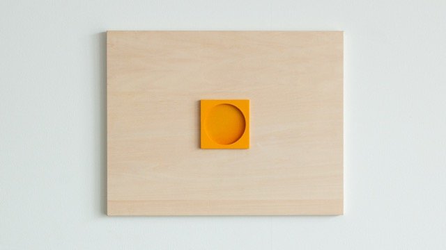
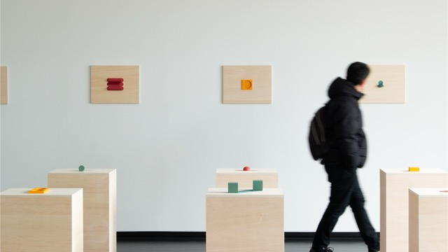
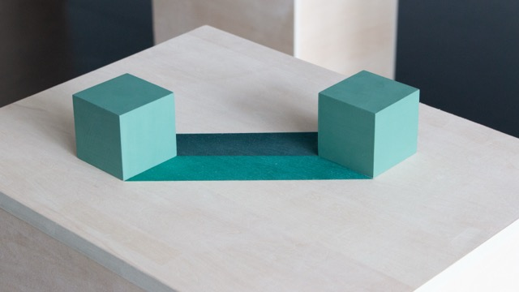
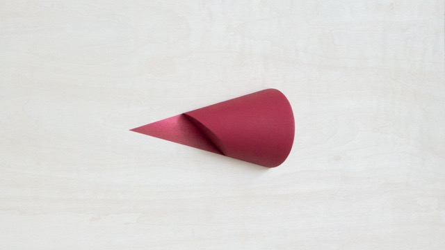
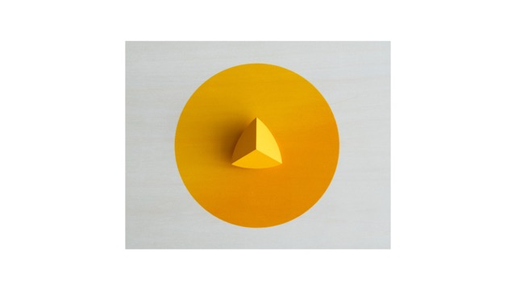
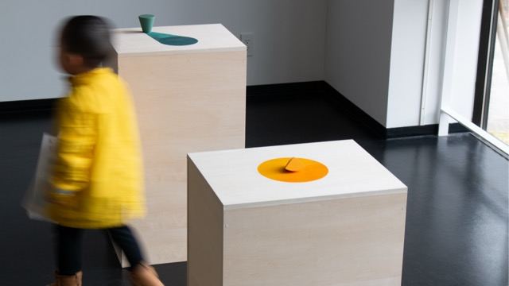
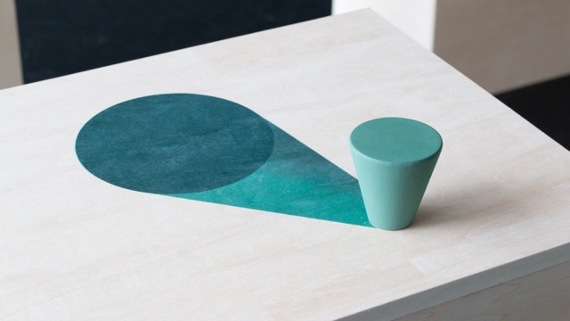
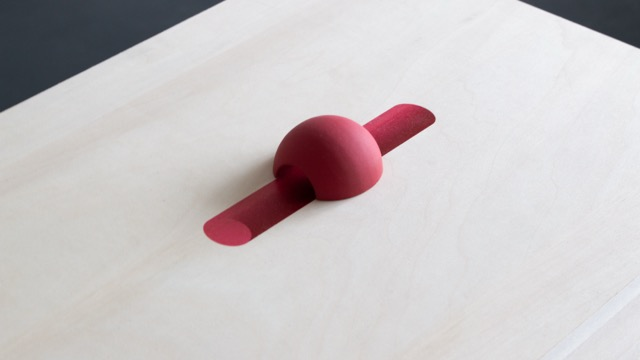
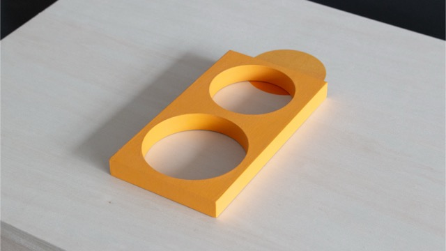
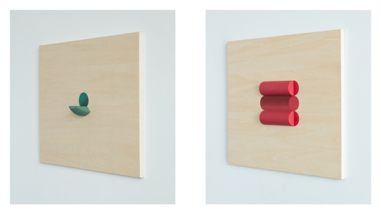
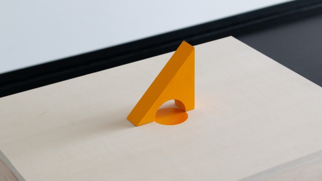
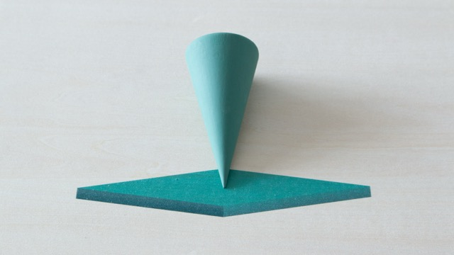
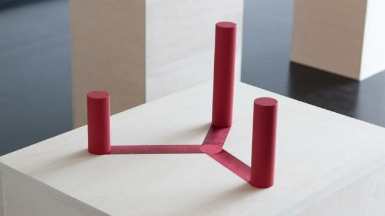
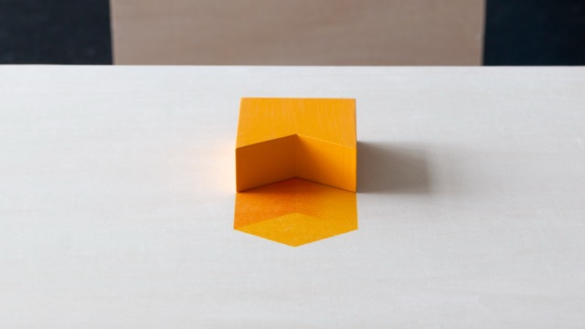
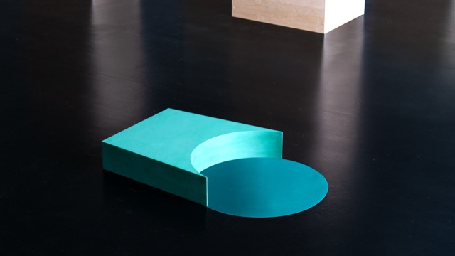
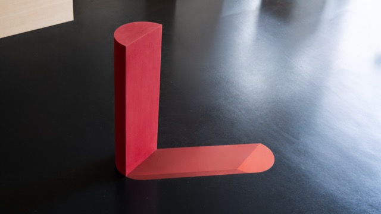
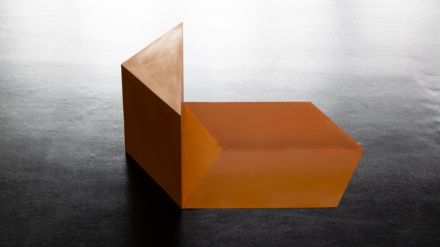
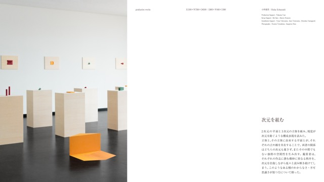
Artist : Rinka Kobayashi
Production Support : Takuma Usui
Setup Support : Rei Sato, Haruto Nozawa
Installation Support : Yuna Yokoyama, Sara Yoneyama, Momoka Yamaguchi
Photography : Nozomi Terashima, Sungwon Mun